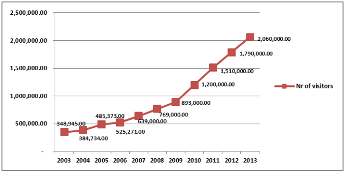
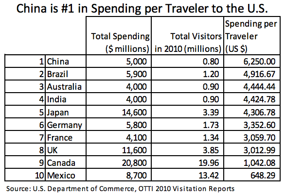

According to the Office of Travel & Tourism within the U.S. Department of Commerce, the number of Chinese travelers to the United States will increase by 232 percent from 2010 to 2016. China is expected to overtake Germany and France n total number of travelers to the U.S. by 2016.

A Chinese tourist spends, on average, about $6,000 per trip, and the contribution to the U.S. economy makes China's outbound tourism market a key component to President Obama's National Export Initiative.

American tour operators, district marketing offices, hotels and airlines will need to cooperate with each other, as well as with government entities, in order to capture more of this highly profitable market. To foster cooperation, industry players and the Commercial Service are in the process of revitalizing a VisitUSA Committee.